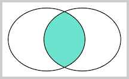
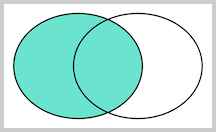
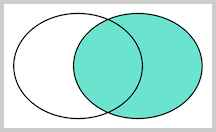

1 select
基本查询¶
条件查询¶
ELECT 语句可以通过 WHERE 条件来设定查询条件，查询结果是满足查询条件的记录。
例如，要指定条件“分数在80分或以上的学生”，写成WHERE条件就是SELECT * FROM students WHERE score >= 80。
投影查询¶
使用 SELECT * FROM <表名> WHERE <条件> 可以选出表中的若干条记录。我们注意到返回的二维表结构和原表是相同的，即结果集的所有列与原表的所有列都一一对应。
如果我们只希望返回某些列的数据，而不是所有列的数据，我们可以用 SELECT 列1, 列2, 列3 FROM ...，让结果集仅包含指定列。这种操作称为投影查询。
例如，从students表中返回id、score和name这三列：
排序¶
我们使用SELECT查询时，细心的读者可能注意到，查询结果集通常是按照id排序的，也就是根据主键排序。这也是大部分数据库的做法。如果我们要根据其他条件排序怎么办？可以加上ORDER BY子句。例如按照成绩从低到高进行排序：
如果要反过来，按照成绩从高到底排序，我们可以加上 DESC 表示“倒序”：
分页查询¶
- 使用
SELECT查询时，如果结果集数据量很大，比如几万行数据，放在一个页面显示的话数据量太大，不如分页显示，每次显示100条。 - 要实现分页功能，实际上就是从结果集中显示第1~100条记录作为第1页，显示第101~200条记录作为第2页，以此类推。
-
因此，分页实际上就是从结果集中“截取”出第M~N条记录。这个查询可以通过
LIMIT <N-M> OFFSET <M>子句实现。我们先把所有学生按照成绩从高到低进行排序： -
现在，我们把结果集分页，每页3条记录。要获取第1页的记录，可以使用
LIMIT 3 OFFSET 0： -
上述查询
LIMIT 3 OFFSET 0表示，对结果集从0号记录开始，最多取3条。注意SQL记录集的索引从0开始。 - 如果要查询第2页，那么我们只需要“跳过”头3条记录，也就是对结果集从3号记录开始查询，把OFFSET设定为3：
- 如果原本记录集一共就10条记录，但我们把OFFSET设置为20，会得到什么结果呢？
OFFSET超过了查询的最大数量并不会报错，而是得到一个空的结果集。
OFFSET是可选的，如果只写LIMIT 15，那么相当于LIMIT 15 OFFSET 0。 在MySQL中，LIMIT 15 OFFSET 30还可以简写成LIMIT 30, 15。 + 使用LIMITOFFSET 分页时，随着N越来越大，查询效率也会越来越低。
聚合查询¶
- 如果我们要统计一张表的数据量，例如，想查询
students表一共有多少条记录，难道必须用SELECT * FROM students查出来然后再数一数有多少行吗？ - 这个方法当然可以，但是比较弱智。对于统计总数、平均数这类计算，SQL提供了专门的聚合函数，使用聚合函数进行查询，就是聚合查询，它可以快速获得结果。
仍然以查询students表一共有多少条记录为例，我们可以使用SQL内置的COUNT()函数查询：
COUNT(*) 表示查询所有列的行数，要注意聚合的计算结果虽然是一个数字，但查询的结果仍然是一个二维表，只是这个二维表只有一行一列，并且列名是COUNT(*)
-
通常，使用聚合查询时，我们应该给列名设置一个别名，便于处理结果：
-
COUNT(*)和COUNT(id)实际上是一样的效果。另外注意，聚合查询同样可以使用WHERE条件，因此我们可以方便地统计出有多少男生、多少女生、多少80分以上的学生等：
- 除了
COUNT()函数外，SQL 还提供了如下聚合函数：
| 函数 | 说明 |
|---|---|
| SUM | 计算某一列的合计值，该列必须为数值类型 |
| AVG | 计算某一列的平均值，该列必须为数值类型 |
| MAX | 计算某一列的最大值 |
| MIN | 计算某一列的最小值 |
- 注意，
MAX()和MIN()函数并不限于数值类型。如果是字符类型，MAX()和MIN()会返回排序最后和排序最前的字符。
要统计男生的平均成绩，我们用下面的聚合查询：
要特别注意：如果聚合查询的WHERE条件没有匹配到任何行，
COUNT()会返回0，而SUM()、AVG()、MAX()和MIN()会返回NULL：
多表查询¶
SELECT查询不但可以从一张表查询数据，还可以从多张表同时查询数据。查询多张表的语法是：SELECT * FROM <表1> <表2>
例如，同时从students表和classes表的“乘积”，即查询数据，可以这么写：
-
这种一次查询两个表的数据，查询的结果也是一个二维表，它是
students表和classes表的“乘积”，即students表的每一行与classes表的每一行都两两拼在一起返回。结果集的列数是students表和classes表的列数之和，行数是students表和classes表的行数之积。 -
这种多表查询又称笛卡尔查询，使用笛卡尔查询时要非常小心，由于结果集是目标表的行数乘积，对两个各自有100行记录的表进行笛卡尔查询将返回1万条记录，对两个各自有1万行记录的表进行笛卡尔查询将返回1亿条记录。
你可能还注意到了，上述查询的结果集有两列id和两列name，两列id是因为其中一列是students表的id，而另一列是classes表的id，但是在结果集中，不好区分。两列name同理 要解决这个问题，我们仍然可以利用投影查询的“设置列的别名”来给两个表各自的id和name列起别名：
-- set alias:
SELECT
students.id sid,
students.name,
students.gender,
students.score,
classes.id cid,
classes.name cname
FROM students, classes;
- 注意到
FROM子句给表设置别名的语法是FROM <表名1> <别名1>, <表名2> <别名2>。这样我们用别名s和c分别表示students表和classes表。
多表查询也是可以添加WHERE条件的，我们来试试：
-- set where clause:
SELECT
s.id sid,
s.name,
s.gender,
s.score,
c.id cid,
c.name cname
FROM students s, classes c
WHERE s.gender = 'M' AND c.id = 1;
连接查询¶
- 连接查询是另一种类型的多表查询。连接查询对多个表进行
JOIN运算，简单地说，就是先确定一个主表作为结果集，然后，把其他表的行有选择性地“连接”在主表结果集上。
例如，我们想要选出 students 表的所有学生信息，可以用一条简单的SELECT语句完成
但是，假设我们希望结果集同时包含所在班级的名称，上面的结果集只有class_id列，缺少对应班级的name列。
现在问题来了，存放班级名称的name列存储在classes表中，只有根据students表的class_id，找到classes表对应的行，再取出name列，就可以获得班级名称。
这时，连接查询就派上了用场。我们先使用最常用的一种内连接——INNER JOIN来实现：
-- 选出所有学生，同时返回班级名称:
SELECT s.id, s.name, s.class_id, c.name class_name, s.gender, s.score
FROM students s
INNER JOIN classes c
ON s.class_id = c.id;
注意INNER JOIN查询的写法是：
- 先确定主表，仍然使用
FROM <表1>的语法； - 再确定需要连接的表，使用
INNER JOIN <表2>的语法； - 然后确定连接条件，使用
ON <条件...>，这里的条件是s.class_id = c.id，表示students表的class_id列与classes表的id列相同的行需要连接； -
可选：加上
WHERE子句、ORDER BY等子句。 -
使用别名不是必须的，但可以更好地简化查询语句。
那什么是内连接（INNER JOIN）呢？先别着急，有内连接（INNER JOIN）就有外连接（OUTER JOIN）。我们把内连接查询改成外连接查询，看看效果：
-- 使用OUTER JOIN:
SELECT s.id, s.name, s.class_id, c.name class_name, s.gender, s.score
FROM students s
RIGHT OUTER JOIN classes c
ON s.class_id = c.id;
- 执行上述
RIGHT OUTER JOIN可以看到，和INNER JOIN相比，RIGHT OUTER JOIN多了一行，多出来的一行是“四班”，但是，学生相关的列如name、gender、score都为NULL。
这也容易理解，因为根据 ON 条件 s.class_id = c.id，classes 表的id=4的行正是“四班”，但是，students表中并不存在 class_id=4 的行。
有RIGHT OUTER JOIN，就有LEFT OUTER JOIN，以及FULL OUTER JOIN。它们的区别是：
-
INNER JOIN只返回同时存在于两张表的行数据，由于students表的class_id包含1，2，3，classes表的id包含1，2，3，4，所以，INNER JOIN根据条件s.class_id = c.id返回的结果集仅包含1，2，3。 -
RIGHT OUTER JOIN返回右表都存在的行。如果某一行仅在右表存在，那么结果集就会以NULL填充剩下的字段。 -
LEFT OUTER JOIN则返回左表都存在的行。如果我们给students表增加一行，并添加class_id=5，由于classes表并不存在id=5的行，所以，LEFT OUTER JOIN的结果会增加一行，对应的class_name是NULL：
-- 先增加一列class_id=5:
INSERT INTO students (class_id, name, gender, score) values (5, '新生', 'M', 88);
-- 使用LEFT OUTER JOIN:
SELECT s.id, s.name, s.class_id, c.name class_name, s.gender, s.score
FROM students s
LEFT OUTER JOIN classes c
ON s.class_id = c.id;
最后，我们使用FULL OUTER JOIN，它会把两张表的所有记录全部选择出来，并且，自动把对方不存在的列填充为NULL：
-- 使用FULL OUTER JOIN:
SELECT s.id, s.name, s.class_id, c.name class_name, s.gender, s.score
FROM students s
FULL OUTER JOIN classes c
ON s.class_id = c.id;
对于这么多种JOIN查询，到底什么使用应该用哪种呢？其实我们用图来表示结果集就一目了然了。
假设查询语句是：
+ 我们把tableA看作左表，把tableB看成右表，那么INNER JOIN是选出两张表都存在的记录：
LEFT OUTER JOIN是选出左表存在的记录：

- RIGHT OUTER JOIN是选出右表存在的记录：

- FULL OUTER JOIN则是选出左右表都存在的记录：

JOIN查询需要先确定主表，然后把另一个表的数据“附加”到结果集上； INNER JOIN是最常用的一种JOIN查询，它的语法是
SELECT ... FROM <表1> INNER JOIN <表2> ON <条件...>； JOIN查询仍然可以使用WHERE条件和ORDER BY排序。